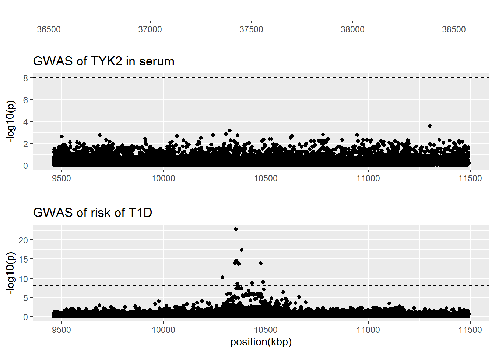

Last updated: 2023-04-28
Checks: 7 0
Knit directory: T1DSCREEN/
This reproducible R Markdown analysis was created with workflowr (version 1.7.0). The Checks tab describes the reproducibility checks that were applied when the results were created. The Past versions tab lists the development history.
Great! Since the R Markdown file has been committed to the Git repository, you know the exact version of the code that produced these results.
Great job! The global environment was empty. Objects defined in the global environment can affect the analysis in your R Markdown file in unknown ways. For reproduciblity it’s best to always run the code in an empty environment.
The command set.seed(20220313) was run prior to running
the code in the R Markdown file. Setting a seed ensures that any results
that rely on randomness, e.g. subsampling or permutations, are
reproducible.
Great job! Recording the operating system, R version, and package versions is critical for reproducibility.
Nice! There were no cached chunks for this analysis, so you can be confident that you successfully produced the results during this run.
Great job! Using relative paths to the files within your workflowr project makes it easier to run your code on other machines.
Great! You are using Git for version control. Tracking code development and connecting the code version to the results is critical for reproducibility.
The results in this page were generated with repository version 5538480. See the Past versions tab to see a history of the changes made to the R Markdown and HTML files.
Note that you need to be careful to ensure that all relevant files for
the analysis have been committed to Git prior to generating the results
(you can use wflow_publish or
wflow_git_commit). workflowr only checks the R Markdown
file, but you know if there are other scripts or data files that it
depends on. Below is the status of the Git repository when the results
were generated:
Ignored files:
Ignored: .Rproj.user/
Unstaged changes:
Modified: analyses/CXCL10.Rmd
Note that any generated files, e.g. HTML, png, CSS, etc., are not included in this status report because it is ok for generated content to have uncommitted changes.
These are the previous versions of the repository in which changes were
made to the R Markdown (analyses/TYK2.Rmd) and HTML
(docs/TYK2.html) files. If you’ve configured a remote Git
repository (see ?wflow_git_remote), click on the hyperlinks
in the table below to view the files as they were in that past version.
| File | Version | Author | Date | Message |
|---|---|---|---|---|
| html | cfd36db | Jaakko Koskenniemi | 2023-04-26 | Build site. |
| html | b91e251 | Jaakko Koskenniemi | 2023-04-26 | Build site. |
| html | c132eaa | Jaakko Koskenniemi | 2023-04-26 | Build site. |
| Rmd | 956f020 | Jaakko Koskenniemi | 2023-04-26 | Fixed issue affecting the X-axis of gene figures in Manhattan plots |
| html | c8d146f | Jaakko Koskenniemi | 2023-04-26 | Build site. |
| html | 3eb9b15 | Jaakko Koskenniemi | 2023-04-26 | Build site. |
| Rmd | 0e13d7a | Jaakko Koskenniemi | 2023-04-26 | First commit |
| html | 24d77f3 | Jaakko Koskenniemi | 2022-11-05 | Build site. |
| Rmd | e86595d | Jaakko Koskenniemi | 2022-11-05 | wflow_publish(c("analyses/CRP.Rmd", "analyses/CXCL10.Rmd", "analyses/IL2RA.Rmd", |
Load packages and import data
library(tidyverse)-- Attaching packages --------------------------------------- tidyverse 1.3.1 --v ggplot2 3.4.1 v purrr 0.3.4
v tibble 3.1.7 v dplyr 1.0.9
v tidyr 1.2.0 v stringr 1.4.0
v readr 2.1.2 v forcats 0.5.1Warning: package 'ggplot2' was built under R version 4.2.2-- Conflicts ------------------------------------------ tidyverse_conflicts() --
x dplyr::filter() masks stats::filter()
x dplyr::lag() masks stats::lag()library(data.table)
Attaching package: 'data.table'The following objects are masked from 'package:dplyr':
between, first, lastThe following object is masked from 'package:purrr':
transposelibrary(coloc)This is a new update to coloc.library(TwoSampleMR)TwoSampleMR version 0.5.6
[>] New: Option to use non-European LD reference panels for clumping etc
[>] Some studies temporarily quarantined to verify effect allele
[>] See news(package='TwoSampleMR') and https://gwas.mrcieu.ac.uk for further detailslibrary(ggpubr)
library(ieugwasr)API: public: http://gwas-api.mrcieu.ac.uk/
Attaching package: 'ieugwasr'The following object is masked from 'package:TwoSampleMR':
ld_matrixlibrary(rio)Warning: package 'rio' was built under R version 4.2.2library(here)Warning: package 'here' was built under R version 4.2.2here() starts at C:/Users/jajoko/Documents/T1DSCREENhere::i_am("analyses/TYK2.Rmd")here() starts at C:/Users/jajoko/Documents/T1DSCREENTYK2_prot <- read_exposure_data("data/export/TYK2_prot_anno_TwoSampleMR.csv", sep=",")
TYK2_T1D <- read_outcome_data("data/export/TYK2_T1D_TwoSampleMR.csv", sep=",")
TYK2 <- harmonise_data(TYK2_prot, TYK2_T1D)Harmonising Serum TYK2 level (4vucPG) and Risk of type 1 diabetes (xN25Oe)Removing the following SNPs for incompatible alleles:
rs151165116, rs183479123, rs185264289, rs373524333, rs374964295, rs534737045, rs537688931, rs544285808, rs546195204, rs555277654, rs558187292, rs558830521, rs571297393, rs571727951, rs572069029, rs747556448, rs757688587, rs767437573, rs77444625, rs775432199, rs779038836Removing the following SNPs for being palindromic with intermediate allele frequencies:
rs1037686, rs10409562, rs10416414, rs10417443, rs11085587, rs11668537, rs11668706, rs11673302, rs12462944, rs12975236, rs12979606, rs12981841, rs12982396, rs12982962, rs12985305, rs13344456, rs1368459, rs1644726, rs1644730, rs1862471, rs1895371, rs1968236, rs2075741, rs2161468, rs2287813, rs2305792, rs2445885, rs2569703, rs2738446, rs2738448, rs281432, rs322144, rs322145, rs3786698, rs3826709, rs3826803, rs4804161, rs4804526, rs55686442, rs61032644, rs62104327, rs62128757, rs6511685, rs67475684, rs6887, rs710845, rs7245579, rs7252965, rs7254559, rs7256625, rs7258340, rs73017023, rs749261, rs753859, rs8112953, rs8113000, rs8182463, rs885743, rs896412, rs918539, rs9973219There are no GWAS hits in TYK2 levels in serum. Thus, coloc and MR is not done.
[1] 9461.514 11491.155
sessionInfo()R version 4.2.1 (2022-06-23 ucrt)
Platform: x86_64-w64-mingw32/x64 (64-bit)
Running under: Windows 10 x64 (build 14393)
Matrix products: default
locale:
[1] LC_COLLATE=Finnish_Finland.1252 LC_CTYPE=Finnish_Finland.1252
[3] LC_MONETARY=Finnish_Finland.1252 LC_NUMERIC=C
[5] LC_TIME=Finnish_Finland.1252
attached base packages:
[1] stats graphics grDevices utils datasets methods base
other attached packages:
[1] here_1.0.1 rio_0.5.29 ieugwasr_0.1.5 ggpubr_0.4.0
[5] TwoSampleMR_0.5.6 coloc_5.1.0.1 data.table_1.14.2 forcats_0.5.1
[9] stringr_1.4.0 dplyr_1.0.9 purrr_0.3.4 readr_2.1.2
[13] tidyr_1.2.0 tibble_3.1.7 ggplot2_3.4.1 tidyverse_1.3.1
[17] workflowr_1.7.0
loaded via a namespace (and not attached):
[1] colorspace_2.0-3 ggsignif_0.6.3 ellipsis_0.3.2 rprojroot_2.0.3
[5] fs_1.5.2 rstudioapi_0.13 farver_2.1.1 fansi_1.0.3
[9] lubridate_1.8.0 xml2_1.3.3 codetools_0.2-18 splines_4.2.1
[13] cachem_1.0.6 knitr_1.39 jsonlite_1.8.0 broom_1.0.0
[17] dbplyr_2.2.1 compiler_4.2.1 httr_1.4.3 backports_1.4.1
[21] assertthat_0.2.1 Matrix_1.4-1 fastmap_1.1.0 cli_3.6.0
[25] later_1.3.0 htmltools_0.5.2 tools_4.2.1 gtable_0.3.0
[29] glue_1.6.2 Rcpp_1.0.8.3 carData_3.0-5 cellranger_1.1.0
[33] jquerylib_0.1.4 vctrs_0.5.2 iterators_1.0.14 xfun_0.31
[37] ps_1.7.1 openxlsx_4.2.5.1 rvest_1.0.2 lifecycle_1.0.3
[41] irlba_2.3.5 rstatix_0.7.0 getPass_0.2-2 scales_1.2.0
[45] hms_1.1.1 promises_1.2.0.1 susieR_0.12.16 yaml_2.3.5
[49] curl_4.3.2 gridExtra_2.3 sass_0.4.2 reshape_0.8.9
[53] stringi_1.7.6 highr_0.9 foreach_1.5.2 nortest_1.0-4
[57] zip_2.2.0 shape_1.4.6 rlang_1.0.6 pkgconfig_2.0.3
[61] matrixStats_0.62.0 evaluate_0.15 lattice_0.20-45 labeling_0.4.2
[65] cowplot_1.1.1 processx_3.6.1 tidyselect_1.1.2 plyr_1.8.7
[69] magrittr_2.0.3 R6_2.5.1 generics_0.1.3 DBI_1.1.3
[73] pillar_1.8.0 haven_2.5.0 whisker_0.4 foreign_0.8-82
[77] withr_2.5.0 survival_3.3-1 abind_1.4-5 mixsqp_0.3-43
[81] modelr_0.1.8 crayon_1.5.1 car_3.1-0 utf8_1.2.2
[85] tzdb_0.3.0 rmarkdown_2.14 viridis_0.6.2 grid_4.2.1
[89] readxl_1.4.0 callr_3.7.1 git2r_0.30.1 mr.raps_0.2
[93] reprex_2.0.1 digest_0.6.29 httpuv_1.6.5 munsell_0.5.0
[97] glmnet_4.1-4 viridisLite_0.4.0 bslib_0.4.0